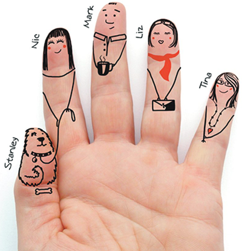

Mark has been with us for three years and is one of our senior staff members. He has been with us since we opened officially two and a half years ago, and is an important member of staff as he oversees a great deal of our day to day operations.
Liz is a relatively new member of the team, having only been with us for months. She has begun to take on greater roles within the company, and is a valued member of the team.
Tina joined us last month as our newest hire. She is currently training under John to gain a better understanding of our day to day practice.
Nic is our Graphical design specialist, and is another of our senior staff members. She specialises in the food and retail sector utilising digital imagery.
Stanley is Nic’s dog and our office mascot.
Contact Information -- 9am-5pm at 01234 567890 or email us at blank@hotmail.co.uk